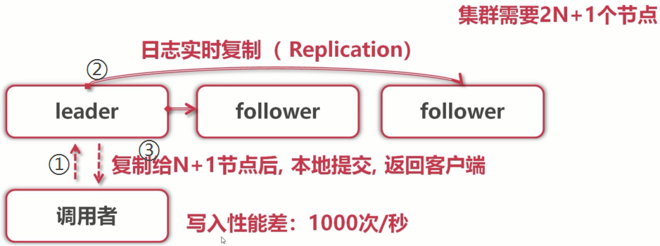
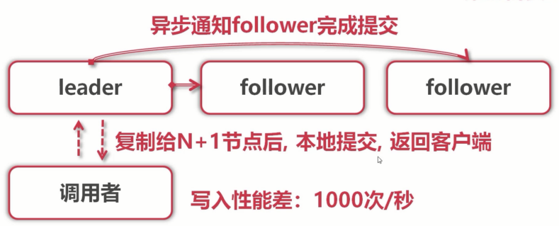
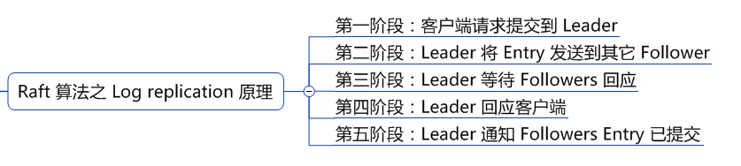

在实际应用中，我们若需要分布式的操作，大多数时候并不需要通过手动实现分布式的协议，而可以借助分布式的应用的来实现分布式应用。
etcd原理特性
etcd实现分布式一致性性，使用到了Raft协议。
Etcd Raft使用入门及原理解析
Raft是一个分布式一致性算法，充分的利用了可复制状态机以及日志。其最核心的设计目标就是易于理解。在性能、错误容错等方面来看有点类似Paxos，但不同之处在于，Raft论文较为清晰的描述了其主要流程以及其中一些细节问题，而Paxos我们知道非常难以理解。
当构建一个分布式系统时，一个非常重要的设计目标就是fault tolerance。如果系统基于Raft协议实现，那么当其中一个节点挂掉，或者发生了网络分区等异常情况时，只要大多数节点仍然能够正常通讯，整个集群就能够正常对外提供服务而不会挂掉。
Etcd raft基本上已经实现了Raft协议的完整特性，包括:
- Leader选举
- 日志复制
- 日志压缩
- 成员变更
- Leader和Follower都支持高效的线性只读查询请求
- 通过batch、pipeline等手段优化日志复制、网络IO的延迟
etcd的重要特性
- 底层存储是按key有序排列的，可以顺序遍历
- 因为key有序，所以etcd天然支持按目录结构高效遍历
- 支持复杂事务，提供类似if · · then … else …的事务能力
- 基于租约机制实现key的TTL过期
etcd与Raft的关系
- Raft是强一致的集群日志同步算法
- etcd是一个分布式KV存储
- etcd利用raft算法在集群中同步key-value
可以理解为Raft协议对日志进行管理，etcd对K/V进行管理。为什么会这么说呢，这里需要先了解一下大多数理论（quorum）。
quorum模型
分布式系统的设计中会涉及到许多的协议、机制用来解决可靠性问题、数据一致性问题等，quorum 机制就是其中的一种。
抽屉理论
- 一个班级60人
- 有一个秘密，告知给班里的31个人
- 那么随便挑选31个人
- 一定有1个人知道秘密
抽屉理论是对quorum模型的理解，实际上quorum模型解析的就是这样的一个机制。
quorum模型
集群要出现大多数，那么就需要奇数个节点，一下为三个节点的实例。
- ① 前端像etcd中写入数据，请求传递给leader；
- ② leader节点将
写日志传递给子节点，当其中一个follower，返回日志复制成功后，则表示已成功复制给大多数（leader也算一个节点）。
- ③ leader节点确认大多数复制成功后，本地提交用户修改操作（此时子节点并没有进行提交），并返回前端修改成功。
leader节点在本地提交，且通知到客户端成功进行操作后，会异步的告知子节点进行提交操作，follower也将完成节点的本地提交操作。只需要保证日志能够复制给大多数即可。

在一个 Raft 集群中只有 Leader 节点能够处理客户端的请求（如果客户端的请求发到了 Follower，Follower 将会把请求重定向到 Leader），客户端的每一个请求都包含一条被复制状态机执行的指令。
更为详细的日志复制过程可以查看，分布式锁的最佳实践之：基于 Etcd 的分布式锁，其中的Raft 算法之 Log replication 原理。

分布式乐观锁简易测试
使用etcd的租约和watch，一个用于自动释放锁，一个用于抢占锁。
这篇博客有更详细的解释：分布式锁的原理和实现详解
1
2
3
4
5
6
7
8
9
10
11
12
13
14
15
16
17
18
19
20
21
22
23
24
25
26
27
28
29
30
31
32
33
34
35
36
37
38
39
40
41
42
43
44
45
46
47
48
49
50
51
52
53
54
55
56
57
58
59
60
61
62
63
64
65
66
67
68
69
70
71
72
73
74
75
76
77
78
79
80
81
82
83
84
85
86
87
88
89
90
91
92
93
94
95
96
97
98
99
100
101
102
103
104
105
106
107
108
109
110
111
112
113
114
115
116
117
| package main
import (
"context"
"fmt"
"time"
"github.com/coreos/etcd/clientv3"
)
func main() {
var (
config clientv3.Config
client *clientv3.Client
err error
lease clientv3.Lease
leaseGrantResp *clientv3.LeaseGrantResponse
leaseId clientv3.LeaseID
keepRespChan <-chan *clientv3.LeaseKeepAliveResponse
keepResp *clientv3.LeaseKeepAliveResponse
ctx context.Context
cancelFunc context.CancelFunc
kv clientv3.KV
txn clientv3.Txn
txnResp *clientv3.TxnResponse
)
config = clientv3.Config{
Endpoints: []string{"www.wukoon-app.com:2379"},
DialTimeout: 5 * time.Second,
}
if client, err = clientv3.New(config); err != nil {
fmt.Println(err)
return
}
lease = clientv3.NewLease(client)
if leaseGrantResp, err = lease.Grant(context.TODO(), 5); err != nil {
fmt.Println(err)
return
}
leaseId = leaseGrantResp.ID
ctx, cancelFunc = context.WithCancel(context.TODO())
defer cancelFunc()
defer lease.Revoke(context.TODO(), leaseId)
if keepRespChan, err = lease.KeepAlive(ctx, leaseId); err != nil {
fmt.Println(err)
return
}
go func() {
for {
select {
case keepResp = <-keepRespChan:
if keepRespChan == nil {
fmt.Println("租约已经失效了")
goto END
} else {
fmt.Println("收到自动续租应答:", keepResp.ID)
}
}
}
END:
}()
kv = clientv3.NewKV(client)
txn = kv.Txn(context.TODO())
txn.If(clientv3.Compare(clientv3.CreateRevision("/cron/lock/job9"), "=", 0)).
Then(clientv3.OpPut("/cron/lock/job9", "xxx", clientv3.WithLease(leaseId))).
Else(clientv3.OpGet("/cron/lock/job9"))
if txnResp, err = txn.Commit(); err != nil {
fmt.Println(err)
return
}
if !txnResp.Succeeded {
fmt.Println("锁被占用:", string(txnResp.Responses[0].GetResponseRange().Kvs[0].Value))
return
}
fmt.Println("处理任务")
time.Sleep(5 * time.Second)
}
|
本文标题：etcd分布式乐观锁
文章作者：小师
发布时间：2019-04-01
最后更新：2022-05-04
原始链接：chunlife.top/2019/04/01/etcd分布式乐观锁/
版权声明：本站所有文章均采用知识共享署名4.0国际许可协议进行许可